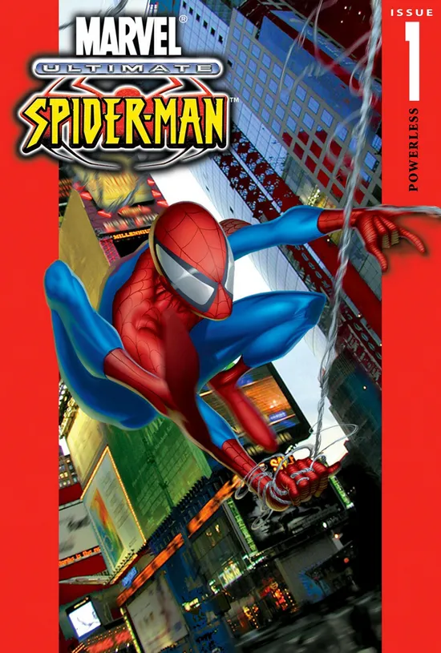
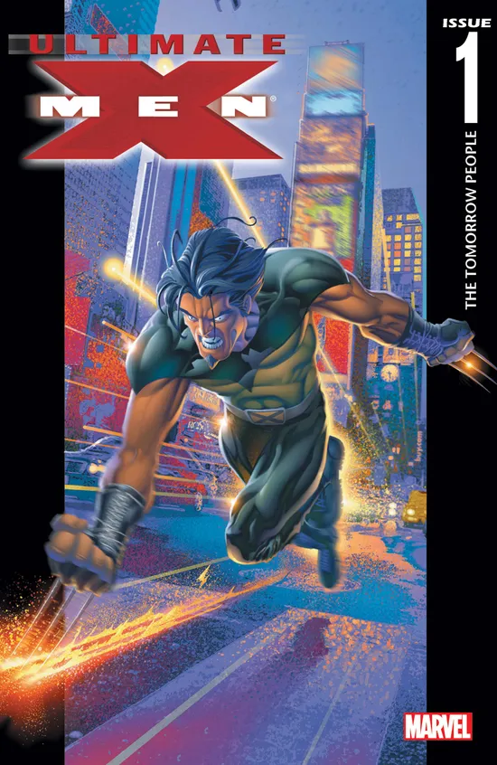
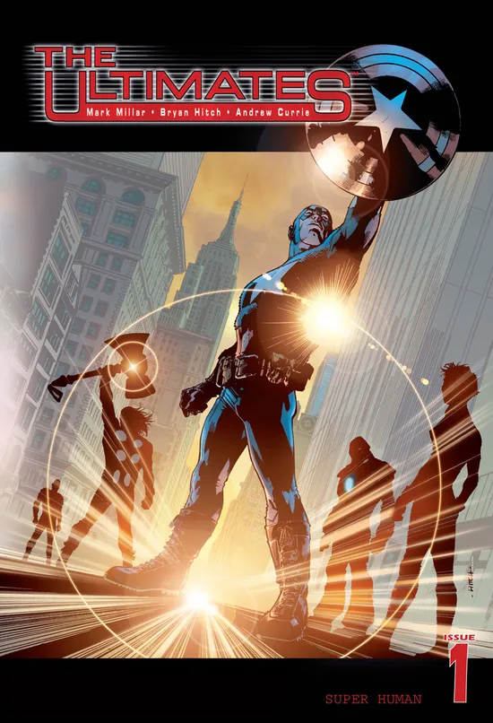
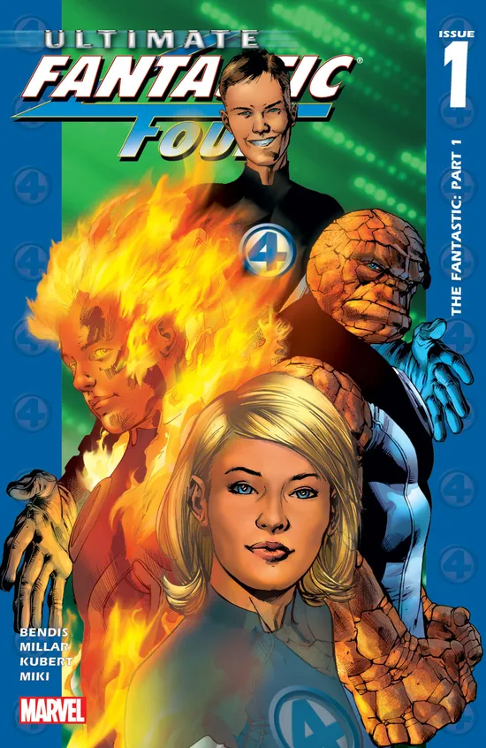

O Cenário de Crise: A Marvel nos Anos 1990 ➳◊Ⓐ➃⍟⎊⧗✇
No final da década de 1990, a Marvel Comics atravessava um dos períodos mais delicados de sua história. Após o estouro da bolha especulativa do mercado de quadrinhos e um processo de recuperação judicial por falência em 1996, a editora acumulava um problema narrativo crítico: quase 40 anos de continuidade ininterrupta na linha tradicional (Terra-616).
Para um jovem nos anos 2000, começar a ler títulos como The Amazing Spider-Man ou Uncanny X-Men exigia compreender décadas de sagas labirínticas, clones, ressurreições e universos paralelos. As bancas e livrarias estavam perdendo uma geração inteira de novos leitores para videogames e para a internet emergente.
A Revolução Editorial: Bill Jemas e Joe Quesada
Em 2000, o presidente da editora Bill Jemas e o editor-chefe recém-empossado Joe Quesada decidiram que era hora de arriscar. Em vez de reiniciar toda a linha clássica — o que enfureceria os leitores antigos —, eles optaram por criar um universo paralelo completamente novo e acessível, batizado de Ultimate Marvel (Terra-1610).
As diretrizes para esse novo selo eram claras:
- Cronologia do Zero: Nenhuma história anterior precisava ser lida; tudo começava na edição número 1.
- Realismo Contemporâneo: Substituição da ficção científica ingênua da Guerra Fria (radiação atômica, raios cósmicos) por biotecnologia moderna, engenharia genética e geopolítica pós-Guerra Fria.
- Linguagem Cinematográfica: Roteiros com foco em ritmo visual amplo, diálogos dinâmicos e narrativa descompactada (*decompression*), pensados para atrair o público que começava a consumir adaptações cinematográficas.
As Quatro Obras Fundamentais
O universo foi erguido sobre quatro séries pilares lançadas entre 2000 e 2004. Clique em cada card abaixo para explorar a proposta, a equipe criativa e o impacto de cada lançamento:

2000Ultimate Spider-Man #1
O ponto de partida do selo. Peter Parker é reformulado como um adolescente crível do século XXI lidando com as pressões do colégio e da biotecnologia.
Explorar esta obra →
2001Ultimate X-Men #1
A luta pela sobrevivência mutante com uniforme tático, abordando terrorismo de guerrilha, preconceito sistêmico e intrigas governamentais.
Explorar esta obra →
2002The Ultimates #1
A releitura dos Vingadores como uma força paramilitar patrocinada pela S.H.I.E.L.D. A HQ que serviu de storyboard direto para os filmes do MCU.
Explorar esta obra →
2004Ultimate Fantastic Four #1
Um centro de estudos de jovens prodígios no Edifício Baxter que viaja para a Zona N, dando origem anos depois ao arquivilão O Criador.
Explorar esta obra →"O Universo Ultimate provou que os personagens da Marvel não eram relíquias presas nos anos 1960, mas sim mitologias flexíveis capazes de refletir qualquer geração moderna."